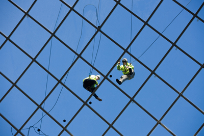
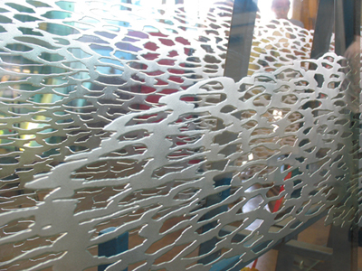
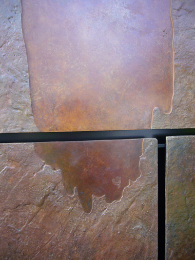
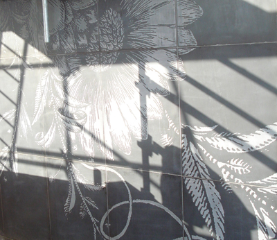
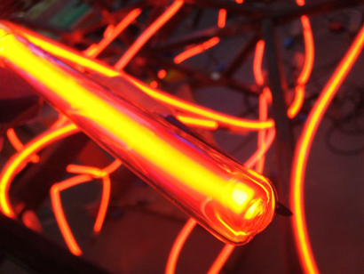
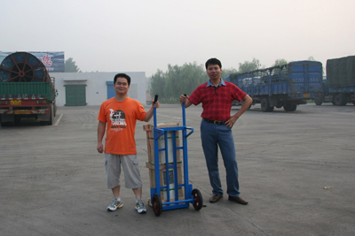
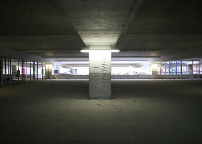

The central roof at Cabot Circus has been created by artist Nayan Kulkarni in partnership with the main scheme architects Chapman Taylor and the project engineers, the free-form shell-shaped glass roof 'floats' above the central square and the scheme's three shopping streets. At 6,500 square metres and composed of some 1,000 panes of glass, the roof creates a light, airy, open environment, while providing protection from the elements.

Susanna Heron working in collaboration with Stanton Williams has developed a unique work of art that takes the form of a series of organic drawings etched into glass panels to make a shallow relief which encourages contrasts between light and shadow play. Comprising 18 massive glass panels individually sand-blasted and acid-etched by hand, the spectacular window is made up of 12 glass panels each measuring 2.5m by 4.8m, with a further six panels each measuring 1.7m by 4.8m.

At street level, a 35 metre by seven metre cast bronze artwork has been integrated into the Portland fossil stone facade of the department store. Running the full length of the building facade on Bond Street South, these individually cast bronze panels feature a unique textured surface, similar to molten lava. Continuing the themes of marine fossils, reflection and shadow-play the Artist has milled a series of recessed forms as smooth flat planes into the organic surface of the bronze.

Wallpaper and textile design studio Timorous Beasties have introduced to the scheme a sandblasted 'wallpaper' onto one of the main building elevations on Bond Street, the principal road which wraps around the scheme. The artwork is a repeat design on a floral, domestic theme. The concept behind the work is to offer street users an unexpected and intriguing experience of the building facade, bringing a sense of the domestic into a busy urban environment.

Ackroyd & Harvey's 20 metre high sculpture is landmark presence at the gateway to the city. The work has been designed to have a low environmental impact and to harness the natural energy of Bristol's prevailing winds. The art works lighting is powered solely through solar and wind energy, and is clad with an intensive layering of thin dark grey slates. The slate is a waste material from the roofing industry. The strata-like tower supports a glazed solar canopy, from which rises a four metre high vertical axis wind turbine.
Vong Phaophanit and Claire Oboussier have created a highly visual permanent installation within the Cabot Circus car park. 'All the world is two' takes the form of twin neon 'figures' each measuring 10x10m suspended within the car park's central void. The work is composed of twelve red coloured, hand-moulded neon strands encased in acrylic. The viewer catches multiple glimpses through the apertures opening onto the void from each of the car park's levels, providing a series of viewing points which frame a different composition. It is only when the viewer arrives at the avenue below that the work as a whole is revealed.

Esther Rolinson's work is located within River Street a wholly residential area. Esther has create a light-based work using steel and glass which has been inspired by the River Frome which runs directly beneath the site, the work seeks to echo the line of its course above ground and takes the form of a series of 13 elegant wedge-shaped light boxes which are embedded into grassed area. These intersect the ribbon of planting at intervals to form a gently glowing 'spine' of low level lighting undulating across the site. Each measuring between one and five metres in length, these beautiful light sculptures are composed of glass covered steel and fluorescent lamps, and present an unusual vista of the river line.
A series of 22 slender tree-like structures, ranging in height from one metre to nine metres all are 'planted' in clusters within the Podium site in the existing Broadmead shopping centre. Wolfgang's sculptures, 'saplings', form a sculptural glade in the heart of the city, creating a sense of calm and tranquillity in a busy urban environment. Words and automatic writing, inspired by the artist's own personal poetry and the words of Massive Attack and Portishead, have been carved into the sculpture these words suggest themes of transition, loss, love and hope, and hark back to the age-old tradition of inscribing pledges of enduring love into the bark of a tree.
 'A Weight
of Stone Carried From China For You'
'A Weight
of Stone Carried From China For You'
This intimate installation reflects the global nature of the procurement and processing of materials, and celebrates those involved in contributing to the creation of this part of Bristol's city centre, and highlight the connections between source and final resting place. 'A Weight of Stone Carried From China For You' is the result of a documented journey taken by Neville which tracks the movement of a single granite kerbstone from its source in a quarry in the Fujian Province of China and its transportation by truck, train and ferry, to its final installation in Bristol's Bond Street. The kerbstone becomes a 'touchstone' for those who notice it amongst a sea of similar stones. It is a poignant reminder that within the creation of this very British city, there is also a small part of China.

 'R310
RCF Ford Mondeo'
'R310
RCF Ford Mondeo'
'R310 RCF Ford Mondeo' is also concerned with the theme of the supply and sourcing of construction materials, and follows the journey of a Ford Mondeo car and its eventual manifestation as a recycled reinforcing bar within the Cabot Circus car park. The work pays homage to the fact that all the reinforcing steel used to construct the car park is 100% recycled. The car, purchased by Neville on E-bay, was driven to a scrap yard in Newport where it was de-polluted and shredded to become 680 kgs of steel which was then transported to Celsa, the Spanish-owned steelworks in Cardiff, where it was melted down and turned into a 32 mm re-bar. The cast number given to the steel scrap enabled it to be tracked to its final destination in a concrete column on the car park's third level where the Ford Mondeo's registration number 'R310 RCF' is inscribed into the column to mark its place.
